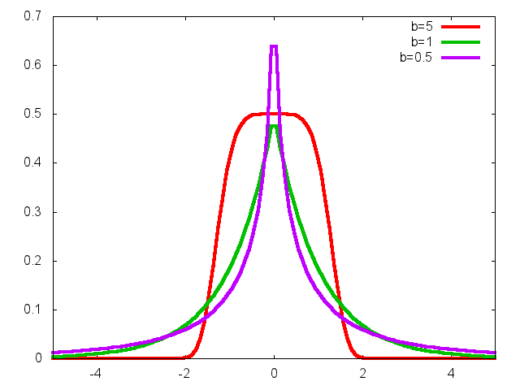

subbotools: Power Exponential estimation
Table of Contents
WARNING: The subbotools package has been discontinued. All its
functionalities are part of the gbutils package, see Laplace and Power Exponential estimation.
Getting Started
The package subbotools provides a set of programs for the Maximum Likelihood Estimation of the Symmetric and Asymmetric Power Exponential (or Subbotin) families of distributions.
The properties of the ML estimator are studied in the paper A new class of asymmetric exponential power densities with applications to economics and finance by G. Bottazzi and A. Secchi. If you find this package useful, you are kindly asked to mention this paper as a background reference in the publications derived by its use in your research or professional activity.
Requirements
The recent versions of the package depend on the GNU Scientific Library (GSL) version 2 (>= 2.1). Package versions before the 1.2.2 depend on the GNU Scientific Library (GSL) version 1 (version >= 1.6).
To be installed from source, the package requires a C compiler and the standard C library. Unix-like environment in which GNU auto-tools can work is required for automatic installation.
Installation instructions
On Linux, the subbotools package can be either installed using a
.deb package or from source. The first method is recommended. You can
download the relevant Debian package (with extension .deb) from
the cafed repository. Only 64 bit executable and source code are made
available starting from version 1.2.2. Then move into the directory
that contains the just downloaded package and use
sudo dpkg -i nameofthepackage
where "nameofthepackage" must be substituted with the name of the
downloaded .deb file. If installation from source is required
instead, keep reading.
The installation from source should be rather straightforward. Download the package and unpack it
tar xvzf subbotools-{version}.tar.gz
move inside the source directory
cd subbotools-{version}
run the configure script
./configure
then build the files
make
become root
su
and install them
make install
If you can't install the file as root you have to provide a different
directory for the binaries using the option --prefix of the
configure script. For more detailed instructions see the "INSTALL"
file in the distributed package.
In Windows 10, the subbotools package can be installed directly
form the Bash shell using the Windows Subsystem for Linux. To activate
it, open the Settings app, go to "Update & Security -> For Developers"
and activate the “Developer Mode”. Then open the Control Panel, go to
“Programs -> Turn Windows Features On or Off” and enable the “Windows
Subsystem for Linux” option. Confirm with “OK" and reboot the system
to install the new software. Open Microsoft Store and install your
preferred Linux distribution. I suggest Ubuntu or Debian. Now you have
a Linux system inside Windows 10. Launch the just installed
application to enter a console and follow the instruction for Linux
above.
In older Windows versions, the subbotools package is installed in
the Cygwin environment. Follow the instructions in the cygwin
installation page.
Overview
Three distinct families of distributions are considered: the original Subbotin family, its asymmetric generalization and a "lesser asymmetric" version that results convenient for certain data. The parametrization of the different families is reported below. For further details see the official documentation, also available in PDF format.
Symmetric Power Exponential
This is the original Subbotin, or Exponential Power (EP), family of distributions which depend on three parameters: the scale parameter \(a\), the shape parameter \(b\) and the position parameter \(m\). The main use of this family is in providing a smooth interpolation between the Gaussian and the Laplacian density. Indeed both these distributions can be seen as special cases of the Subbotin distribution. In this way by fitting a Subbotin on a given dataset, one does obtain a descriptive information about the tail behavior (shape parameter) but also derive some inference about the postulated Gaussian or Laplacian behavior of the data. The density reads
\[ f(x;a,b,m) = {1 \over 2 \, a \, b^{1/b} \, \Gamma(1+1/b)}\; e^{-{1 \over b}\, \left|{x-m \over a}\right|^b} \;\;. \]

Figure 1: EP densities with a=1 and different values of b.

Figure 2: EP densities with b=1 and different values of a.
Asymmetric Power Exponential
The Asymmetric Exponential Power (AEP) is a 5-parameter family of densities. In addition to the location parameter m, the left and right parts of the density are independently parametrized by a scale and shape parameter. The density reads
\[ f(x;b_l,b_r,a_l,a_r,m) = \frac{1}{C}\;\; e^{-\left( \frac{1}{b_l}\;\left|\frac{x-m}{a_l}\right|^{b_l}\;\theta(m-x)+ \frac{1}{b_r}\;\left|\frac{x-m}{a_r}\right|^{b_r}\;\theta(x-m) \right)} \]
where \(\theta(x)\) is the Heaviside theta function and \(C\) the normalization constant, \(C = a_l b_l^{1/b_l-1}\Gamma(1/b_l) + a_r b_r^{1/b_r-1}\Gamma(1/b_r)\).

Figure 3: AEP with al=1, bl=2, ar=1 and different values of br.

Figure 4: AEP with al=1, bl=0.5, br=0.5 and different values of ar
These plots are taken from A new class of asymmetric exponential power densities with applications to economics and finance by G. Bottazzi and A. Secchi.
Less Asymmetric Power Exponential
The less asymmetric density is the Asymmetric Power Exponential density, with the two scale parameters set equal, that is \(a_l=a_r\).
\[ f(x;b_l,b_r,a,m) = \frac{1}{C}\;\; e^{-\left( \frac{1}{b_l}\;\left|\frac{x-m}{a}\right|^{b_l}\;\theta(m-x)+ \frac{1}{b_r}\;\left|\frac{x-m}{a}\right|^{b_r}\;\theta(x-m) \right)} \]
the normalization constant now reads \(C = a (b_l^{1/b_l-1}\Gamma(1/b_l) + b_r^{1/b_r-1}\Gamma(1/b_r))\).
Structure of the package
The subbotools package is composed of the following programs:
- subbofit
- finds the Subbotin density that better fit a given set of observations. The observations are considered independently drawn from the same probability distribution and the parameters value are obtained via maximum likelihood estimation.
- subboafit
- finds the asymmetric Subbotin density that better fit a given set of observations. The observations are considered independently drawn from the same probability distribution and the parameters value are obtained via maximum likelihood estimation.
- subbolafit
- finds the (less) asymmetric Subbotin density, i.e. an asymmetric density with a symmetric scale parameter, that better fit a given set of observations. The observations are considered independently drawn from the same probability distribution and the parameters value are obtained via maximum likelihood estimation.
- subboshow
- takes a set of observations as input and produces a graphic showing the value of the log-likelihood of this set as a function of the density parameters.
- subbogen
- generates random variables extracted from a Subbotin density. The relevant parameters can be provided on the command line or read from standard input.
- subboagen
- generates random variables extracted from an asymmetric Subbotin density. The relevant parameters can be can be provided on the command line or read from standard input.
These programs have been mainly written to be used from the command line. They read data from file or standard input in an ASCII format and print the result in ASCII format to standard output. The versatile gnuplot program is used as graphic back-end. When the output is intended to be graphically displayed, it has been designed in a format suitable to be sent to gnuplot for plotting.
Documentation
For a description of the method applied and a brief tutorial on the use of the different commands see here. The same instructions are available in a PDF document.
Contributors
Angelo Secchi provided helpful suggestions in the design of programs user interface and he wrote the Cygwin installation instructions.